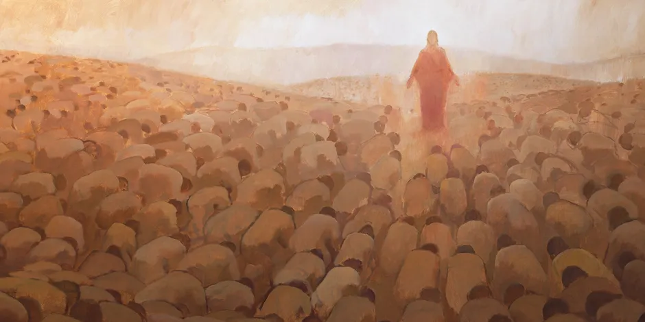

Overview
The Gathering of Israel is one of the most profound doctrines restored in the early days of The Church of Jesus Christ of Latter-day Saints. This doctrine revolves around the gathering of the descendants of Israel—both spiritually and physically—as part of the preparation for the Second Coming of Jesus Christ.
The Old Testament tells us that the children of Israel will one day be gathered again. Joseph Smith and the early Latter-day Saints lived in the time in which the promised gathering would begin. The Saints were also ti build a "city of Zion" to which converts to the Church could gather in preparation for the Second Coming. Within just a few months of the organization of the Church, Joseph Smith received a revelation instructing the newly baptized members to leave their homes and gather "in unto one place upon the face of this land." Ohio was the first place designated for gathering. Next revelation to Joseph Smith identified Jackson County, Missouri as the place to begin building the city of Zion. Unfortunately, the Saints were expelled from the county in 1833, three years after establishing of the Church, preventing them from building the city. The Saints continued to establish settlements in surrounding counties. Thankfully, in April 1836 prophet Moses from the Old Testament appeared to Joseph, giving him the "keys of the gathering of Israel from the four parts of the earth, and the leading of the ten tribes from the Land of the North.” Soon thereafter, new apostles were called to England to establish the Church's very first mission overseas. Thousands and thousands of converts started relocating to the United States, populating Saints' stakes in Ohio, Missouri, and later, Illinois. In Nauvoo, Illinois, the Saints established a large stake and began building a new temple. Joseph Smith taught that in one sense, "the whole America is Zion," and the Saints could gather anywhere so long as there was a temple.
Historical Background
From the earliest days of the Restoration, Joseph Smith taught that the gathering of Israel was central to the mission of the Church. Missionary efforts, the gathering of Saints to Nauvoo, and the subsequent trek to the Salt Lake Valley were all seen as part of this divine mandate.
After Joseph's death, the Saints migrated to American West, where they continues to establish stakes of Zion and build temples. New members from abroad were encouraged to to emigrate as fast as possible to the "Great Basin". However, the Church leaders in 1890s began to encourage new members to remain in their homelands. In 1894, the First Presidency and Quorum of the Twelve decided that members who resided far from Utah should not be encouraged to emigrate and those who are already well employed and stable financially shouldn't emigrate to Utah "where labor is so scarce." But the earlier directive to gather to Zion continued to appeal to some members, and leaders felt they could not in good conscience discourage members from migrating if they desired and had the means to do so. In 1952, President David O. McKay traveled to Europe and told to a reporter that the Church aims "to keep our adherents here instead of encouraging them to immigrate to Utah and other places in the United States." Subsequent Presidents of the Church continued to pursue the goal of building temples wherever there were large concentrations of Saints. Elder McConkie taught that every stake on earth is the gathering place "for the lost sheep of Israel who live in its area." Establishing of temples and stakes throughout the world has provided Latter-day Saints with the advantage and blessing of gathering and continuance of gathering God's children in their own lands.
Key Events in the Gathering
- The establishment of the Church in 1830, marking the beginning of spiritual gathering.
- The missionary efforts to the British Isles in the 1830s, bringing thousands to Zion.
- The Saints’ migration westward to establish Zion in the Salt Lake Valley.
Scriptural Connections
The doctrine of the Gathering of Israel is closely tied to the prophecies in the Bible and the Doctrine and Covenants. Key scriptures include:
- Isaiah 11:12: "And he shall set up an ensign for the nations, and shall assemble the outcasts of Israel..."
- Doctrine and Covenants 45:25-31: A revelation given to Joseph Smith outlining the last days and the gathering of Israel.
Significance Today
Today, the Gathering of Israel continues through missionary work, temple ordinances, and the spiritual gathering of all who come to Christ. The doctrine highlights the Church's global mission and its role in preparing for the Second Coming.
Sources
- Doctrine and Covenants, Section 45
- The Holy Bible, Isaiah 11
- Church History Topics: The Gathering of Israel (churchofjesuschrist.org)